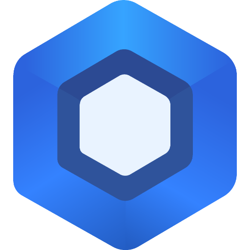

工作台

Miuix资源用量
128.4kToken · 输入 91.2k / 输出 37.2k
原型数据 · 需要 Host 接入真实 usage 统计
4活跃窗口
7 / 11今日 Run 完成
6Teammate 工作中
1等待你处理
现在运行
pi-maestro-app-party正在重构 Monitor 交互 · 2 teammates
62%maestro-flow等待确认 Plan · 已运行 18m
ASK需要关注
maestro-flow 请求选择 Dashboard 的统计口径
Monitor
监督会话在线1 个窗口等待输入 · 点击窗口即可设为消息目标
app-party#window.app-party · Implementing · 62%
2 agentsmaestro-flow#window.maestro-flow · Attention
ASKdocs#window.docs · Sleeping
idle监督记录
你 → maestro-flow先完成现有 Run，再处理 Dashboard。
2m发送方式：steer单窗口
设置
本机偏好连接与安全
Desktop Host192.168.1.8:4739
已连接仅 Wi-Fi 同步避免移动网络持续拉取
设备授权Token 与已授权设备
›通知
Attention 与 Ask仅在需要决策时通知
Run 完成成功和失败均提醒
版本与诊断
Maestro Mobile0.1.0
Mobile Host0.1.0 · 已连接
Pi Agent待 Host 接入
pi-maestro-flow已检测 · 版本待接入
Maestro CLI待 Host 接入
协议兼容性正常
会话
最近Monitor跨窗口监督会话
置顶Dashboard redesign继续讨论移动端统计信息架构